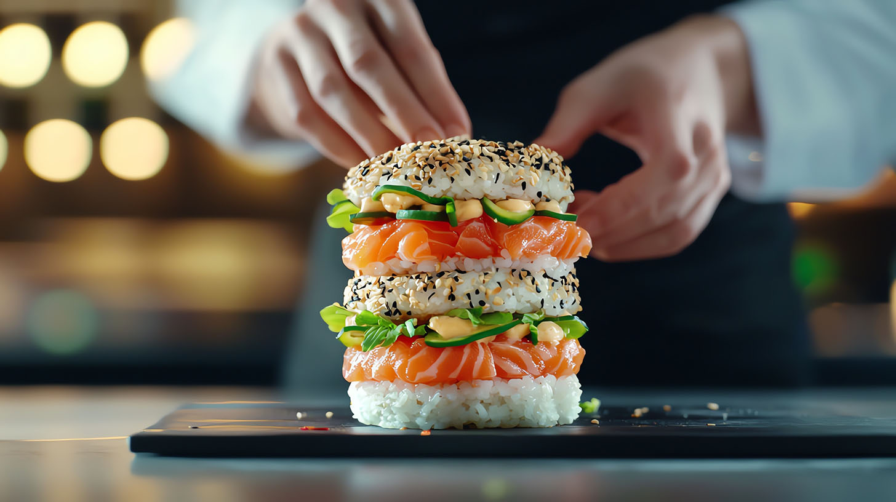
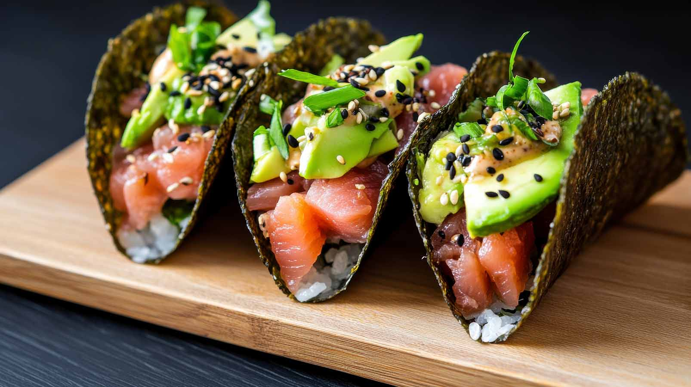

-
SUSHI Spinning on a belt?!
In 1958, Yoshiaki Shiraishi opened the first conveyor belt sushi restaurant (回転寿司, kaiten-zushi) named "Genroku Zushi" in Higashi-Osaka. In conveyor belt sushi restaurants, conveyor belts installed along tables and counters in the restaurant transport plates of sushi to customers. Generally, the bill is based on the number of plates, with different colored plates representing the price of the sushi.
When Genroku Sushi opened a restaurant at the Japan World Exposition, Osaka, 1970, it won an award at the expo, and conveyor belt sushi restaurants became known throughout Japan. In 1973, an automatic tea dispenser was developed, which is now used in conveyor belt sushi restaurants today. When the patent for conveyor belt sushi restaurants expired, a chain of conveyor belt sushi restaurants was established, spreading conveyor belt sushi throughout Japan and further popularizing and lowering the price of sushi. By 2021, the conveyor belt sushi market had grown to 700 billion yen and spread outside Japan.
Tacos but sushi!
Sushi tacos are a fun and flavorful fusion dish that combines the elements of sushi with the form of a taco. This inventive twist on sushi replaces the traditional tortilla or taco shell with either a sheet of crispy nori (seaweed) or a crunchy wonton shell. The result is a handheld, sushi-inspired meal that’s both satisfying and easy to eat, capturing the flavors of sushi in a playful and modern presentation.
The filling of a sushi taco is much like that of a sushi roll, featuring ingredients like raw fish (such as tuna, salmon, or yellowtail), sushi rice, and fresh vegetables like cucumber, avocado, and radishes. These fillings are usually topped with sauces like spicy mayo, soy sauce, or ponzu for added flavor. The toppings might also include elements like sesame seeds, tobiko (fish roe), or thinly sliced green onions, which give the taco a vibrant, colorful look.
Sushi tacos have gained popularity in recent years, especially in fusion restaurants and food trucks. They appeal to sushi lovers who are looking for a new way to enjoy their favorite flavors, and they’re also a hit on social media thanks to their visually striking presentation. These tacos are not only delicious but also versatile, offering endless possibilities for customization based on individual tastes and dietary preferences.
-

Burger? SUSHI!
A sushi burger is a unique fusion dish that brings together elements of traditional sushi with the structure of a burger. Unlike a typical burger, the "buns" in a sushi burger are made from compacted sushi rice, which is often shaped into a round, bun-like form. Sometimes, these rice buns are lightly seared or toasted to add a bit of texture, giving them a slight crisp on the outside while remaining soft on the inside.
The fillings for sushi burgers resemble classic sushi ingredients, creating a flavorful blend of familiar tastes. Common fillings include raw fish, such as tuna or salmon, as well as cooked seafood options like shrimp or tempura. Vegetables like avocado and cucumber are popular choices, adding freshness and crunch. For added flavor, condiments such as wasabi, soy sauce, or spicy mayo are often used, enhancing the overall taste profile.
To keep everything together, sushi burgers may include a thin sheet of seaweed or a leaf of lettuce as a wrapper. This not only adds a visual element but also makes the burger easier to handle. Sushi burgers have become a trendy item, especially popular on social media for their visually appealing presentation. They are commonly offered in fusion restaurants or creative sushi spots, appealing to those looking for a fun twist on traditional sushi.
